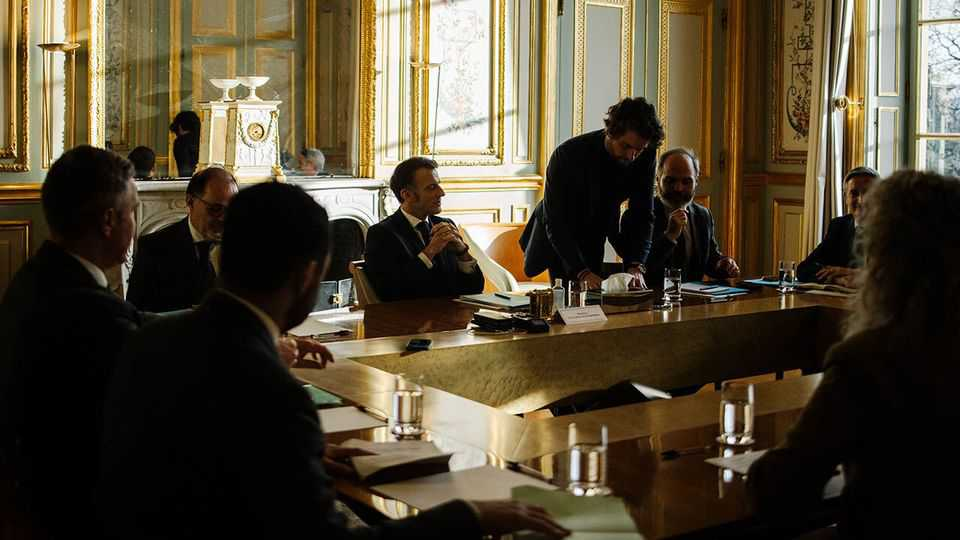

Europe | An interview with France’s president
Emmanuel Macron declares a European state of emergency
He urges the EU to move fast or be swept aside
February 12th 2026

EUROPE IS facing a “geopolitical and geo-economic state of emergency”, declares Emmanuel Macron. If the continent does not invest in its economy and lift barriers to growth more quickly, it will be “swept aside” by technology from America and imports from China.
That was the French president’s message to fellow European leaders, delivered in an interview with The Economist and six other newspapers on February 9th. He was speaking ahead of a European Union gathering on February 12th to discuss how to boost the union’s competitiveness. Many European leaders share his sense of urgency, but whether they agree with his prescriptions is a different question. In a sign of how fractious the debate may prove, the leaders of Germany, Italy, Belgium and several others have called a “pre-summit” meeting before the main event. Mr Macron has agreed to join them.
The French president’s call for Europe to move faster to generate growth and reduce dependency focuses on four points. First, he argues for a greater effort to simplify the myriad regulations for which the EU is justly famed. Second, Mr Macron wants Europe to diversify its suppliers in order to curb reliance on narrow groups of non-European providers. This effort should range, he says, from reinforcing the euro’s international role—by, for instance, developing euro-denominated currency swap lines with trading partners—to reducing dependency on critical assets from abroad, such as American natural gas and cloud computing.
Third, Mr Macron argues for a policy of “European preference” to protect the union’s “critical industries”, such as steel, chemicals and defence. By this he means tying state subsidies to a minimum share of European inputs, depending on the sector, as well as enforcing “buy European” rules for public procurement. Finally, the French president wants a far bigger EU push for investment in innovation, both public and private, in line with the recommendations of the report written in 2024 by Mario Draghi, ex-head of the European Central Bank. Mr Macron would like to see the launch of “eurobonds for the future”, to be invested in defence and security, green technology and AI, drawing in part on Europeans’ high savings rate.
Such calls for European reform have been issued many times, but Mr Macron is not the only leader who now feels a greater sense of urgency. The French president terms it a “Greenland moment”: fellow Europeans have begun to understand the gravity of the stakes. There is a risk, he warns, that the initial moment of trauma, as Europeans worry that America is abandoning them, turns to “a cowardly sense of relief” when the crisis passes. That would be a mistake. Europe is now dealing with an “openly hostile” American administration, which wants its “dismemberment”. “Everyone needs to understand,” he says, “that the crisis we are living through is a profound geopolitical rupture.”
On some of the president’s points, the EU is already travelling in the French direction. For instance, SAFE, the union’s new joint defence-procurement scheme, mandates—at French insistence—that at least 65% of the components of many systems it pays for must come from countries that are members of the EU or have association agreements with it.

It will be harder for Mr Macron to find agreement on European-preference rules. France is facing push-back over its desire for strong rules favouring European firms in the EU’s “Industrial Accelerator Act”, which is being negotiated by Stéphane Séjourné, the European industry commissioner (and a longtime friend of Mr Macron). Germany and Italy worry that this could amount to protectionism. The Baltic and Nordic countries and the Netherlands have jointly warned that such rules risk “wiping out our simplification efforts” and “pushing investments away from the EU”. The legislation could be a “game-changer” and a “big win for France”, says Mujtaba Rahman of the Eurasia Group, a risk consultancy, “but there is still concern that it is French protectionism dressed up as strategic autonomy.”
Mr Macron dismisses the charge. “I don’t think at all that this is protectionist,” he argues, declaring that he simply wants to spare European firms by “not impos[ing] on them the rules we don’t impose on importers”.
The French president put in another plug for European co-operation by recommitting to a troubled common air-defence programme. The Future Combat Air System, a joint project between France, Germany and Spain, is meant to comprise a sixth-generation fighter jet, autonomous drones and a communications “combat cloud”. After years of bitter tension between the firms involved, many analysts have given it up for dead. “We think it is a good project, and I have heard no German comment to suggest that it is not a good project,” Mr Macron insists. Indeed, he wants to attract additional European partners, to create systems competitive with American ones.
Ultimately, Mr Macron argues, Europe should not underestimate its strengths: as a market of 450m people, but also as a region governed by the rule of law. The challenge it faces is to transform these strengths into levers of geopolitical force, before other powers pull so far ahead that it can no longer compete. It was concern that Europe was being excluded from great-power manoeuvring that recently prompted Mr Macron to send his diplomatic adviser to Moscow. He returned, unsurprisingly, with the message that Russia was not interested in peace.
There will be plenty of scepticism about some of Mr Macron’s appeals. His domestic political situation is weak. He has no majority in parliament, and only 15 months left in office to push his ideas through. There is bafflement in many European capitals that France refused in January to back the EU-Mercosur trade deal with Latin American countries, even as its leader was arguing for diversifying European trade in the name of strategic autonomy. But few would dispute Mr Macron’s warnings that Europe is too slow and too fragmented, and that it is running out of time to fix its problems. So, for that matter, is he. ■
To stay on top of the biggest European stories, sign up to Café Europa, our weekly subscriber-only newsletter.